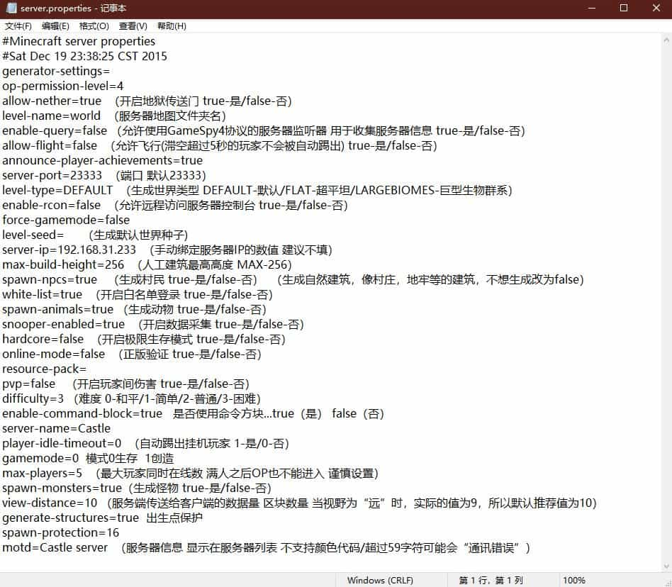
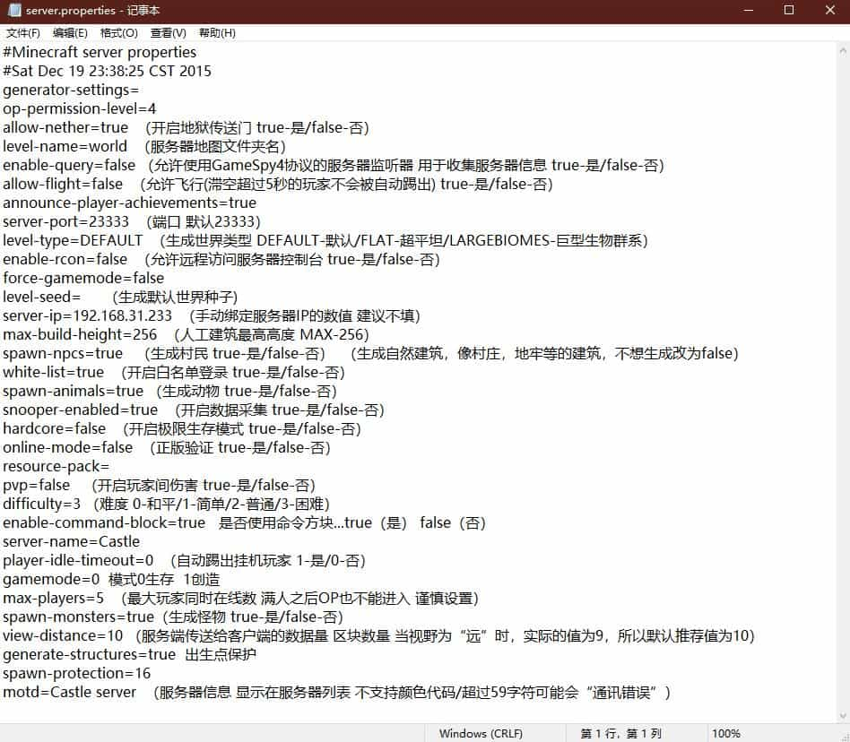

MC如何开服
现有很多版本的Minecraft
1.你可以在正版启动器里面下载原版的服务器来开服,都说正版了当然得购买之后才能下载.
注意:原版下载的服务器不能添加MOD
2.你可以在FORGE上下载,找你需要的版本就可以.
2.1下载完成之后打开(下面那个.log文件是运行之后自动生成的)
选择服务器下载然后等待片刻(需要选择一个空的文件夹)
2.2当提示这个就下载好了2.3找到这个文件(minecraft_server.1.14.4.jar)先双击运行你会发现文件夹里会多几个文件或文件夹2.4打开这个eula.txt的文件将红框里的false修改为true之后在执行2.3步骤 2.5这就是初步开服完成了
2.5这就是初步开服完成了 扩展知识:1.服务器配置文件server.properties2.可使用该方法调整服务器的内存选用第3行是注意前面引号里的是你安装java的路径
扩展知识:1.服务器配置文件server.properties2.可使用该方法调整服务器的内存选用第3行是注意前面引号里的是你安装java的路径